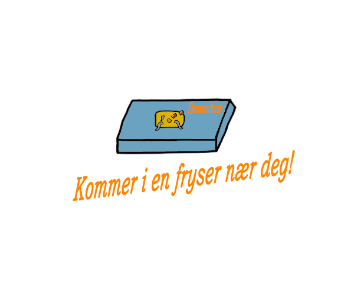

Har DU lyst på et sunnere alternativ for en dessert som FAKTISK smaker godt?
Prøv en Banankar NÅ!
Banankar er laget av økologisk dyrkede ingredienser og akkar oppdrettet på humant vis. Ingrediensene er også kortreist siden de er produsert i Norge. Banankar har også et naturlig lavft innhold av fett som gjør det til en perfekt desert.
Per 100g inneholder Banankar 8,2g fett, 41,7g karbohydrater, 10,3g proteiner, 6,5g fiber, 35g vann.
I tillegg inneholder Banankar (i synkende mengde)
kalium, natrium, jern, sink, vitamin C, vitamin B6 og selen.
